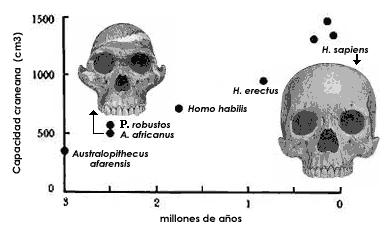
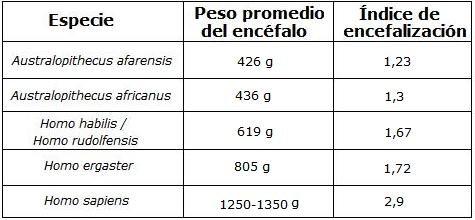
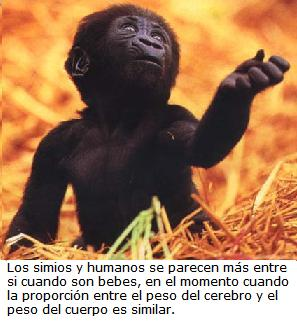
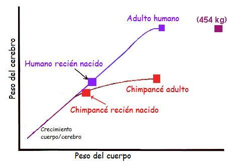
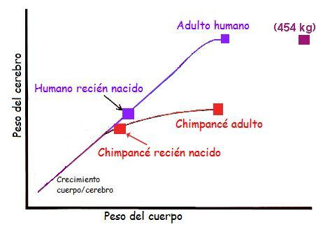

Si pudiéramos viajar al Pleistoceno tardío de Europa veríamos muchos mamíferos de gran tamaño, dentro de los cuales se destacaría el Megaloceros, o alce irlandés. Este animal con un nombre doblemente engañoso - no es una alce, es un venado y vivió desde las islas británicas hasta la China - es el ciervo más grande que jamás halla vivido. Los machos de alce irlandés son famosos por una característica particular: poseían una inmensa cornamenta que alcanzaba 3,7 metros de envergadura y pesaba 5 kilos. Seguramente, como en los verdaderos ciervos, estas pesadas cornamentas crecían y se mudaban anualmente de manera que les permitiera a sus poseedores exhibirlas en la temporada de apareamiento.
Muy probablemente los machos de alce irlandés gastaban mucha energía en el desarrollo y porte de tan inmensas cornamentas. En la temporada de reproducción los machos de alce irlandés eran más vulnerables a los depredadores, pues no podrían huir fácilmente hacía una zona arbolada. Todo este coste lo justificaba una sola cosa: pasar sus genes a la siguiente generación.
Los biólogos creen que características sexuales secundarias como esta evolucionaron gracias a la selección de las hembras. El proceso denominado selección sexual - fue descrito por primera vez por Charles Darwin - y permite comprender porque muchos organismos portan estructuras que en la naturaleza les puede traer ciertos problemas y desventajas. Los científicos también notaron que durante la filogenia (la historia evolutiva de la especie) del alce irlandés el desarrollo de la cornamenta fue cada vez mayor que la del estado de la especie ancestral. A este tipo de evolución los biólogos dan el nombre de hipermorfosis.
La hipermorfosis no solo jugó un papel importante en la evolución de la cornamenta del alce irlandés, también lo hizo con uno de nuestros órganos más preciados: el cerebro. Nuestro cerebro es el órgano que nos hace humanos y la mente es el producto de la función del cerebro humano. No obstante, el cerebro humano (la estructura natural más compleja conocida del Universo.) es muy reciente en la historia geológica del planeta - no más de 500.000 años. El tamaño del cerebro es la característica más notable del género Homo. La mayor parte de miembros del género Homo tiene tamaños cerebrales superiores a los 600 cc, considerablemente mayores que los grandes antropoides, los de Australopithecus y los de Paranthropus. Si nos remontáramos tres millones y medio de años, veríamos que nuestros ancestros tenían una capacidad craneal de unos 300-400 cm3, una capacidad similar a la de los chimpancés actuales. Cerca de un millón y medio de años atrás tal capacidad craneal se había duplicado, y siguió creciendo posteriormente hasta alcanzar los mayores valores en dos especies del Cuaternario: El Homo neanderthalensis y nosotros: Los Homo sapiens, con valores cercanos a los 1300 cc.
El índice de encefalización
Para concluir que ha ocurrido una hipermorfosis del cerebro en la evolución humana es necesario que los paleontólogos logren comprender que tanto ha aumentado el tamaño del encéfalo a lo largo de la evolución de los homínidos, ya que esto guarda relación con las funciones cognitivas y la inteligencia. A diferencia de los que algunos creen un cerebro “más grande” no necesariamente significa “más inteligente”. El tamaño absoluto del encéfalo no es una buena medida de la inteligencia, ya que su volumen depende del tamaño del cuerpo. Los humanos tenemos un cerebro con una masa alrededor de los 1250-1350 gramos. Pero no somos los mamíferos con el mayor encéfalo, son mayores los del elefante africano (5.600 g) o las ballenas (6.800 g). El encéfalo cumple las tareas de la coordinación del funcionamiento resto del cuerpo, y por lo tanto debe ser grande en las especies de gran tamaño corporal.
La encefalización es el tamaño relativo del cerebro respecto al tamaño corporal. El único método para comparar el encéfalo de especies de tamaños diferentes es el de calcular el peso encefálico que debería tener según su peso corporal (valor esperado) y comparar dicho peso con su peso encefálico real (valor encontrado). El índice entre valor esperado y el valor real se conoce como índice de encefalización. Si el índice es igual a 1, esa especie tiene el tamaño de encéfalo que le corresponde a su tamaño corporal. Si el valor es superior a 1 los encéfalos son mayores de lo esperado. Los humanos tenemos un encéfalo 7 veces superior que un mamífero de su tamaño, pero comparado con un primate haplorrino [1] de su tamaño tiene un cerebro 2,9 veces superior.
¿Cómo creó la evolución primates más encefalizados?
Como mencione anteriormente el registro fósil atestigua que el índice de encefalización aumentó con el paso del tiempo. Sin embargo aún no he dicho que mecanismo usó la evolución para ello. Los cerebros de los chimpancés y gorilas tienen una alta tasa de crecimiento antes del nacimiento, pero está se frena ostensiblemente después del nacimiento. Sin embargo, los humanos se diferencian de sus primos porque en su evolución lograron obtener un rápido crecimiento del cerebro antes del nacimiento y dos años después de este. (Fig2). Los humanos retenemos la tasa de crecimiento neuronal. Nosotros añadimos cerca de 250,000 neuronas por minuto en el desarrollo postnatal temprano. Esta fue la clave.


Figura 2. Continuación de la tasa de crecimiento neuronal fetal después del nacimiento. Mientras los chimpancés y otros simios frenen la proliferación de nuevas neuronas tras el nacimiento, los humanos retienen la tasa de crecimiento neuronal fetal por años.
La proporción entre el peso del cerebro y el peso del cuerpo es similar para los grandes simios y los humanos recién nacidos. Precisamente los simios y humanos se parecen más entre si cuando son bebes. Sin embargo cuando los humanos son adultos la proporción es 3.5 que la de los simios. A medida que un humano crece la relación entre el peso del cerebro y del cuerpo está literalmente por fuera de patrón (Fig.3). A nivel celular se puede notar que se forman cerca de 30,000 sinapsis por segundo por centímetro cuadrado durante los primeros pocos años de vida (las sinapsis son las conexiones entre neuronas).
 
Figura 3. Los humanos se alejan del patrón cuando uno compara la encefalización humana con la de otros simios. La tasa cerebro/cuerpo humana (El índice de encefalización) es cerca de 3.5 mayor que la de otros simios.
La retención de la tasa de crecimiento neuronal en nuestra evolución hace de los bebes humanos “fetos extrauterinos” por los primeros años de nuestra vida. Nuestra gestación actual sería de 21 meses si siguiéramos el patrón de madurez de los simios. Es decir, naceríamos del tamaño que tienen los niños de un año de edad. Tal parto sería imposible para una madre humana. Es de notar que el parto a las 40 semanas de gestación es de por si muy laborioso por las modificaciones de la pelvis humana a la postura bípeda (la postura bípeda evolucionó antes que la retención de la tasa de crecimiento neuronal). El nacimiento de un bebe humano es resultado de la anchura de la pelvis, la madurez de los pulmones, e indudablemente la circunferencia de la cabeza.
La extraordinaria producción de neuronas en forma continua que creó la evolución tuvo importantes y radicales consecuencias para los humanos, tales como:
Generar nuevos módulos (sitios dirigidos) que pueden adquirir nuevas funciones.
Almacenar nuevas memorias para ser usadas en pensar y pronosticar nuevos escenarios
Aprender por la interconexión entre ellas mismas y con las neuronas generadas prenatalmente.
Este período de desarrollo postnatal tiene mucho que ver con la maduración de los circuitos neuronales determinados por el diámetro del axón y la mielinización.
La niñez: Una nueva etapa en el ciclo de vida humano
El mantenimiento de la tasa de crecimiento rápido de neuronas trajo como consecuencia el desarrollo de la niñez. Este período va desde los tres a los siete años. El período de la niñez está caracterizado por la dentición inmadura, un pequeño sistema digestivo, y un rápido crecimiento del cerebro que demanda una alta dieta calórica. Este es un período de tiempo cuando los humanos deben ser llevados y alimentados por los adultos. Durante este tiempo, el cerebro se desarrolla más rápido que cualquier otra porción del cuerpo (Figura 4), y se desarrolla mucho más rápido que el sistema digestivo requerido para alimentarlo. Los enormes requerimientos calóricos para el desarrollo del cerebro debería demandar un prolongado período en el cual el infante debería tener que ser alimentado por adultos.

Figura 4. El cerebro crece más rápido que el resto del cuerpo durante los cinco primeros años de la vida humana. (After Bogin, 1997)
El período de la niñez podría permitir que el cerebro se desarrolle en un ambiente enriquecido. Como B. Childs concluyó: “La exposición extendida de un sistema nervioso madurando gradualmente a las experiencias de un ambiente variable, junto con la resilencia mental a continuar a aprender en todos los años es la receta para la agilidad adaptativa que ha capacitado a los seres humanos para vivir en todas las latitudes y así explotar todos los recursos de la Tierra para la construcción de civilizaciones y para ser estéticamente creativo.”.
Otros científicos, como B. Bogin argumenta que esto es actualmente un producto colateral de la infancia y no su intención. El valor selectivo de la niñez debería ser mejorar la posibilidad de supervivencia de cada infante hasta la madurez. Esto explicaría porque los humanos tienen un prolongado desarrollo y una baja fertilidad, lo cual hizo la rama de los Homo unos simios únicos, adaptables, creativos y muy cabezones.
Muchos estudiosos argumentan que nosotros llegamos a ser humanos a través de nuestras interacciones tempranas con un ambiente rico en sonidos, texturas, olores e imágenes. Esta breve reflexión sobre nuestro proceso evolutivo de hipermorfosis lleva un importante mensaje: “Cuidar de una infancia feliz, con educación y buena nutrición es la clave para el óptimo desarrollo de los individuos y de toda la sociedad.”
Nota
Volver a la sección Ciencias de los orígenes
Comentarios
Comments powered by Disqus